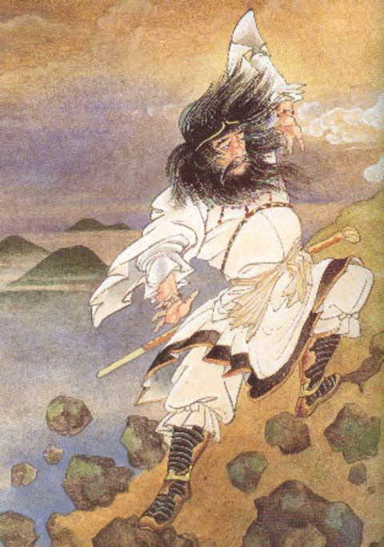
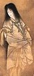
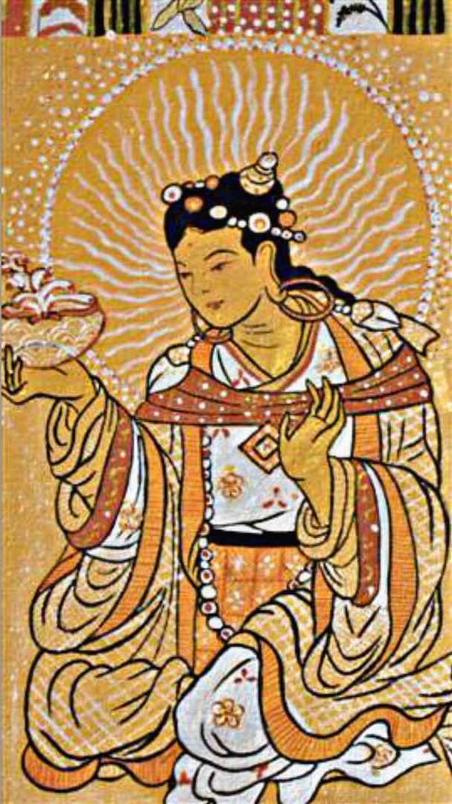
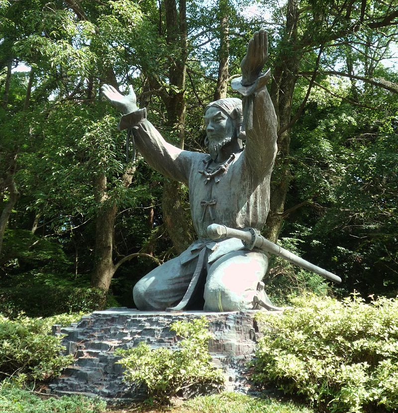
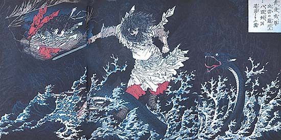
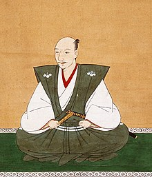
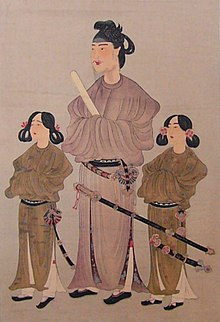

There are two kinds of "human gods" that are regarded as worshippers of the gods. The first one is a person who has made many great achievements in his life. The second type is a person who died due to bizarre reasons and caused unexplained disasters. Also known as "Chong Shen" (祟り神).
Click "search" for detail
MajorGod

Amaterasu (天照)

Izanagi (伊邪那岐)
zanagi (Japanese: イザナギ, recorded in the Kojiki as 伊邪那岐 and in the Nihon Shoki as 伊弉諾) is a deity born of the seven divine generations in Japanese mythology and Shinto, and his name in the Kojiki is roughly translated to as "he-who-invites". He is also known as Izanagi-no-mikoto or Izanagi-no-Ōkami.

Izanami (伊邪那美)
MinorGod

Uke Mochi (保食神)

Ōkuninushi (大国主)
Ōkuninushi (大国主) is a kami in Shinto. He is believed to be originally the ruler of Izumo Province, until he was replaced by Ninigi. In compensation, he was made ruler of the unseen world of spirits and magic. He is believed to be a god of nation-building, farming, business, and medicine.

Susanoo-no-Mikoto
MinorGod

Oda Nobunaga (織田信長)

Toyotomi Hideyoshi (豊臣 秀吉)
Toyotomi Hideyoshi (豊臣 秀吉, March 17, 1537 – September 18, 1598) was a preeminent daimyō, warrior, general, samurai, and politician of the Sengoku period[1] who is regarded as Japan's second "great unifier".[2] He succeeded his former liege lord, Oda Nobunaga, and brought an end to the Warring Lords period. The period of his rule is often called the Momoyama period, named after Hideyoshi's castle. After his death, his young son Hideyori was displaced by Tokugawa Ieyasu.
